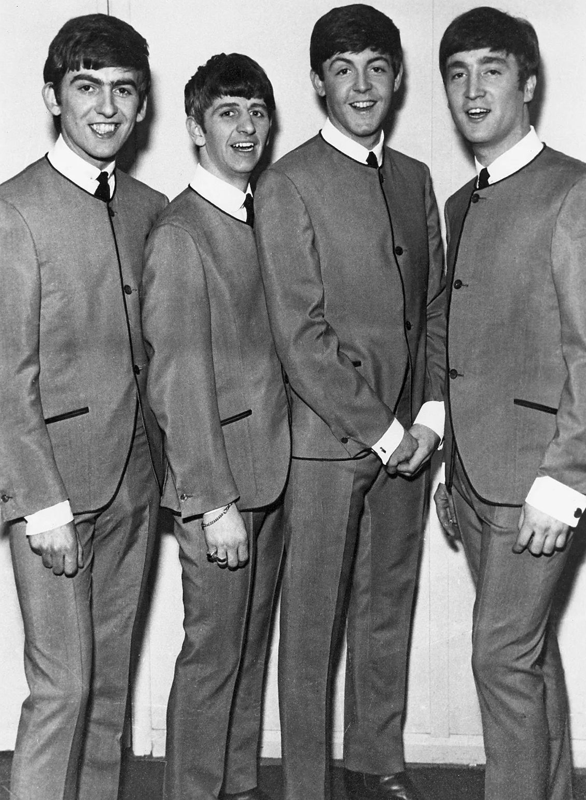
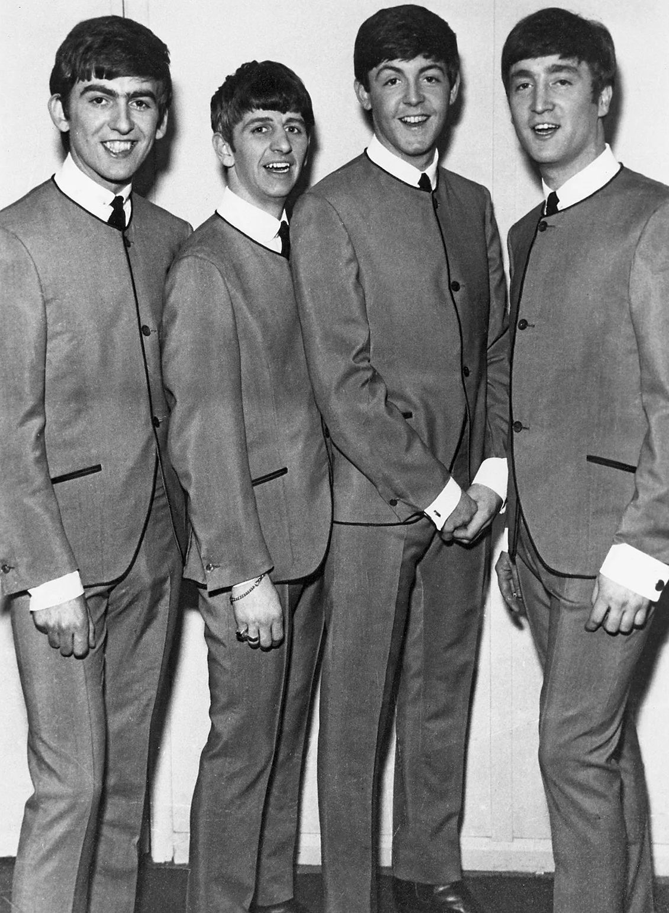

The Beatles are an English rock band founded in Liverpool in the year of 1960. The members are Paul Mccartney, John Lennon, Ringo Starr and George Harrison.
Formation of the band
In March 1956, John Lennon, aged 16, and a few of his friends from school played in a skiffle band called the Quarrymen. After meeting John in the July of that year, Paul McCartney joined the band as a rhythm guitarist and invited his friend George Harrison to watch the band perform. George then auditioned to be in the band, but John thought that he was too young, however, after several months of persistence, he performed lead guitar in a performance as was enlisted as their lead guitarist.
On 11th February 1963, The Beatles recorded ten songs during a single studio session for their debut album, Please Please Me. After the positive reaction to their first single Love Me Do, the single Please Please Me was met with a bigger reaction, and reached number one on every UK chart except Record Retailer, where it reached number two. Due to their commercial success, it increased their media exposure – the Beatles became known for their comical attitude as this was different to other pop artists at the time. Due to their attitude and behaviour, they become even more of an interest to their fans.
Discography
- Please Please Me (1963)
- With The Beatles (1963)
- A Hard Day’s Night (1964)
- Beatles For Sale (1964)
- Help! (1965)
- Rubber Soul (1965)
- Revolver (1966)
- Sgt Pepper’s Lonely Hearts Club Band (1967)
- The Beatles (White Album) (1968)
- Yellow Submarine (1969)
- Abbey Road (1969)
- Let It Be (1970)
GALLERY
 


Most Streamed Songs by The Beatles
- Here Comes the Sun
- Come Together
- Let It Be
- Yesterday
- Hey Jude